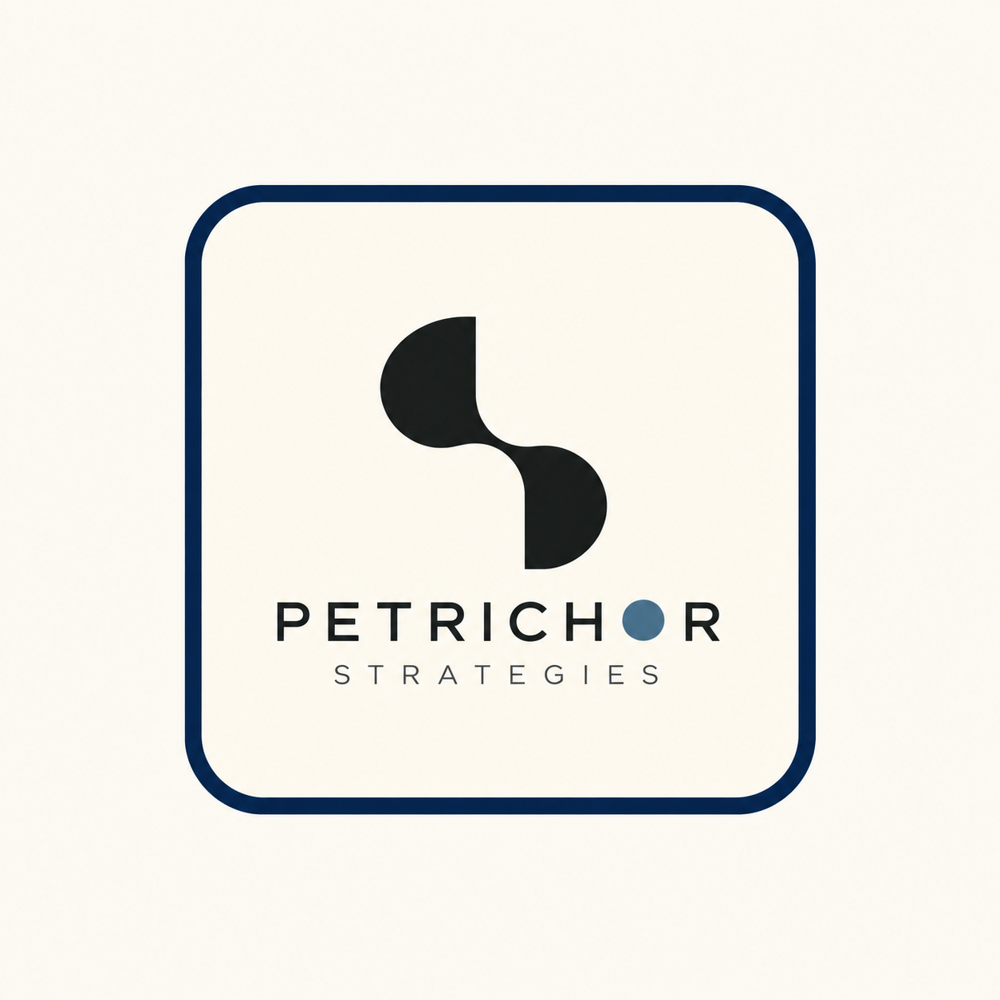
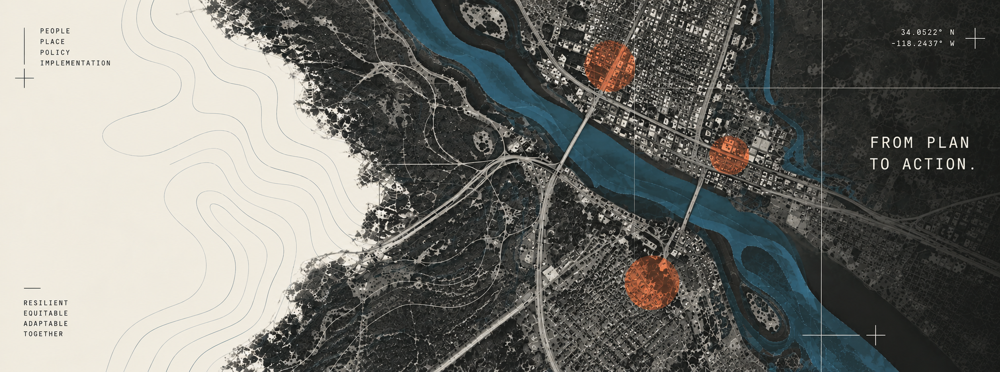

Resilience Strategy
Understand risk, community priorities, existing plans, and the systems shaping a place.

RESILIENCE / DESIGN / IMPLEMENTATION
Petrichor Strategies helps communities turn resilience goals, local knowledge, and existing plans into practical projects that prepare places for a changing climate.

01 / WHY PETRICHOR
Communities already hold enormous amounts of knowledge—in residents, staff, plans, infrastructure, landscapes, and lived experience.
Petrichor helps identify the missing connections between those systems and turn them into opportunities for resilience.
02 / WHAT WE DO
We work between planning and implementation—where strategy becomes a project, a funding pathway, a design intervention, or a clear next step.
Understand risk, community priorities, existing plans, and the systems shaping a place.
Translate needs into physical strategies, project concepts, and implementation-ready ideas.
Use spatial data to reveal relationships, vulnerabilities, opportunities, and gaps.
Connect priorities to grants, partners, programs, phasing, and practical next steps.
Help communities understand what happened, what is needed, and what can come next.
03 / HOW WE THINK
Who is this for? Local knowledge, lived experience, institutions, vulnerability, and capacity.
What can work here? Landscape, infrastructure, development patterns, hazards, and physical systems.
What has the community already committed to? Plans, regulations, priorities, and requirements.
Where aren't the systems connecting yet—and what becomes possible when they do?
Projects, design strategies, funding pathways, partnerships, and next steps.
04 / SELECTED EXPERIENCE
Petrichor is a new practice built on experience across disaster recovery, resilience research, urban design, community engagement, mapping, and implementation. The work below reflects founder experience prior to and alongside the practice.
DISASTER RECOVERY / WESTERN NORTH CAROLINA
Field-based research across communities in Western North Carolina examining local-first recovery, logistics, unmet needs, and the systems shaping long-term resilience.
CLIMATE + INFRASTRUCTURE / NEW YORK
Research and analysis connecting climate disasters, financial impacts, public infrastructure, and community resilience.
URBAN DESIGN / YUCATÁN
Design strategy, mapping, and stakeholder charrette work translating local narratives and development goals into a resilient urban framework.
05 / ABOUT
Petrichor Strategies is an emerging resilience consultancy and design practice founded by Sawyer McCarley.
The practice grew from a simple observation: communities often know what they need, but the systems around them don't always connect. Planning, design, funding, infrastructure, public policy, and lived experience are frequently treated as separate conversations.
Petrichor works in the space between them—helping communities see the larger system, identify what's missing, and build a clearer path from intention to implementation.
“I like helping people see the gaps.”
06 / CONTACT
Working through a resilience plan, recovery effort, infrastructure challenge, or project that has struggled to move toward implementation?
START A CONVERSATION →